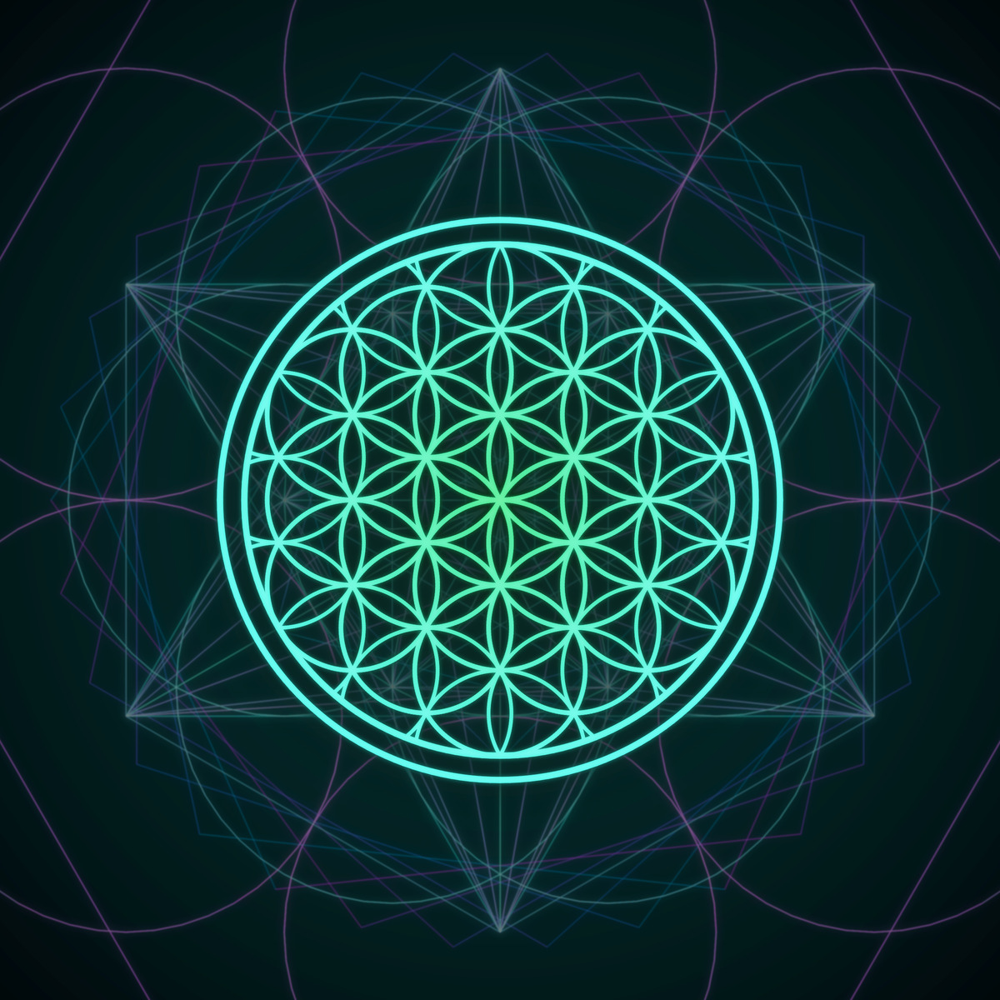

7:42

A · Mandala des Tages, nur das Bild
Was es zeigt: den Favoriten des Tages, randlos in einer abgerundeten Kachel. Größe 2×2, frei bis 4×4 ziehbar; das Bild bleibt quadratisch und füllt die Kachel.
Antippen öffnet die App mit genau diesem Mandala im Editor.
Wechsel jeden Morgen zusammen mit dem Tageshintergrund, aus denselben angehakten Favoriten; ist der Tageshintergrund aus, wechselt das Widget trotzdem.